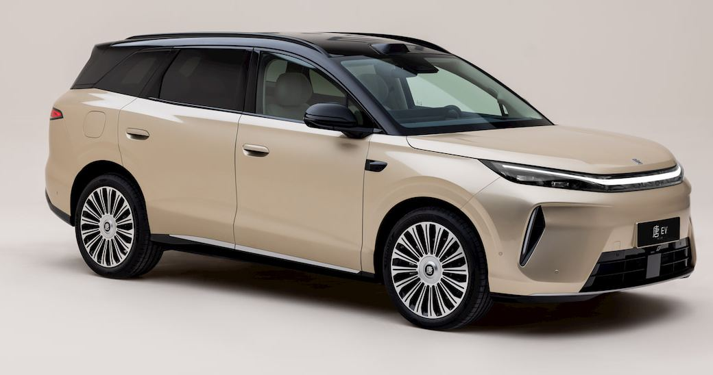
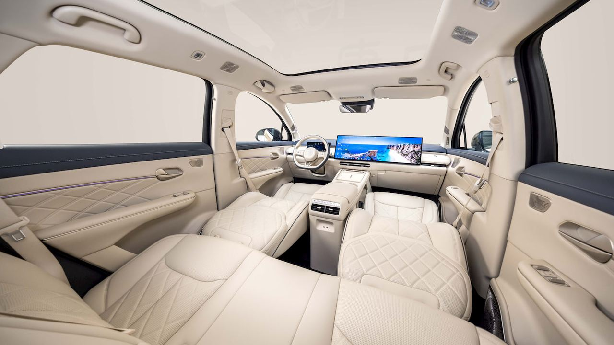
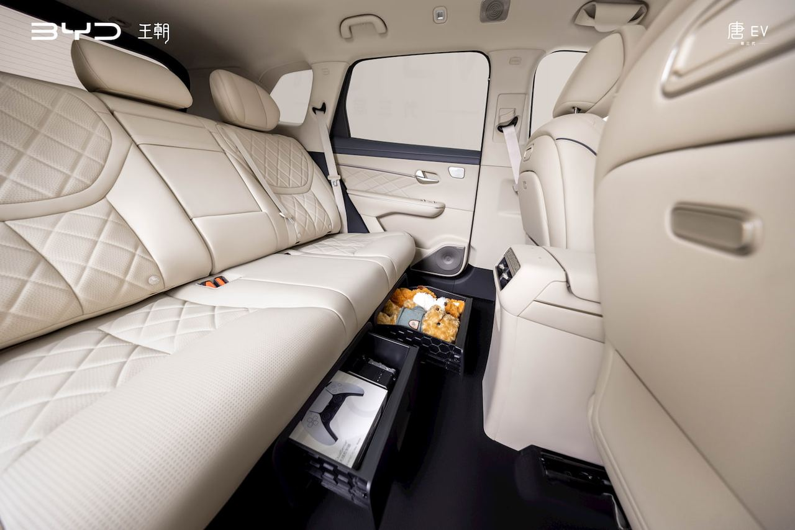

BYD 比亞迪 · 上市 · 中國2026-11-24
第三代比亞迪唐 EV 上市：五座旗艦休旅、香檳金雙色車身與雙 30 吋級大螢幕
BYD launches the new Tang EV, a luxury 5-seat SUV with two +30″ screens for under $30,000
比亞迪 11/24 讓第三代唐 EV 正式上市，定位在七座「大唐」之下的五座旗艦純電休旅，售價 18.79 萬人民幣起，比預售價低了約 3.7 萬。車長 5,045 mm、軸距 2,950 mm，尺寸接近 Tesla Model X；座艙主打 35.4 吋一體式「星環」螢幕加 30 吋全景劇院螢幕。
設計解析 Design Notes
- 雙色車身香檳金車身配黑色車頂與 A 柱，做出懸浮車頂效果，讓 5 米長的車身看起來更輕。
- 細燈帶車頭細長貫穿式日行燈壓在引擎蓋邊緣，下方保險桿兩側是直立式刀鋒造型，車頭維持封閉電動車臉。
- 五座換空間放棄第三排，換到 1,000 mm 的後座腿部空間與同級最大 205 L 前車廂。
- 大螢幕座艙35.4 吋星環螢幕橫跨儀表板，加上 30 吋全景劇院螢幕，米白色座椅配絎縫造型。